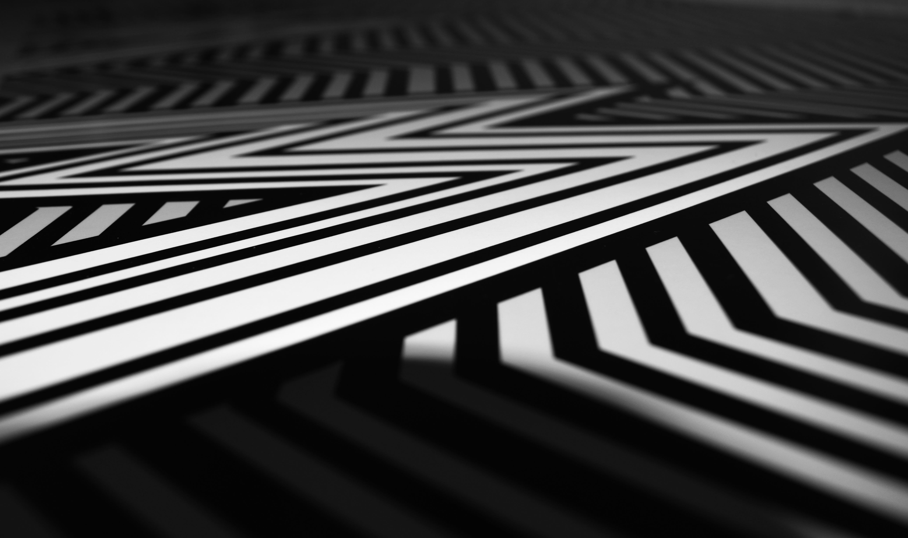
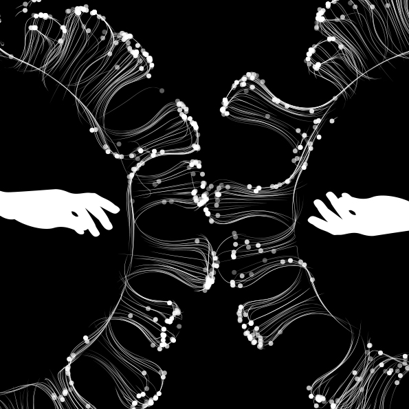
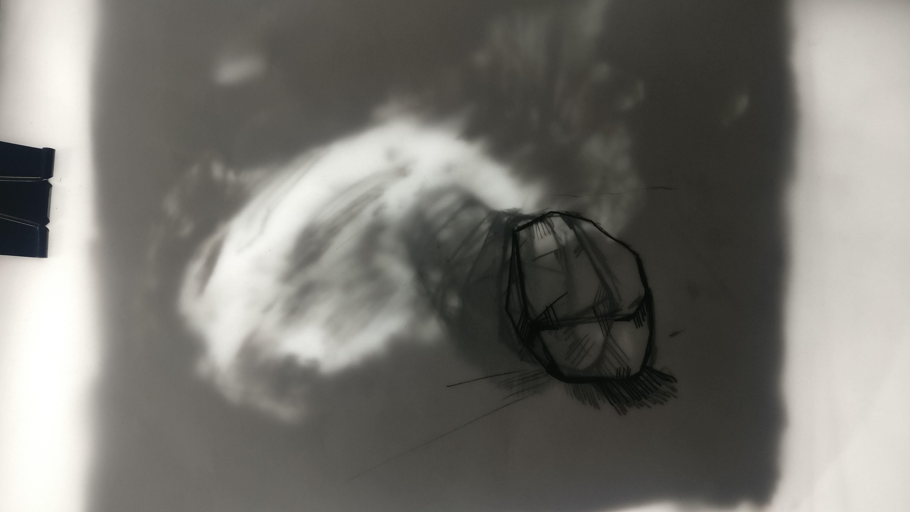
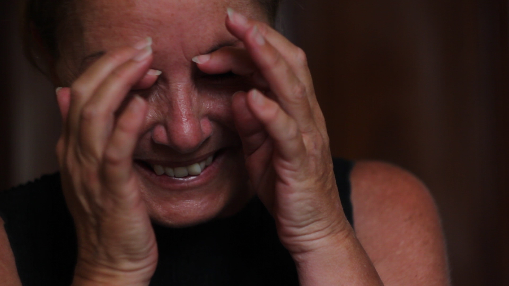
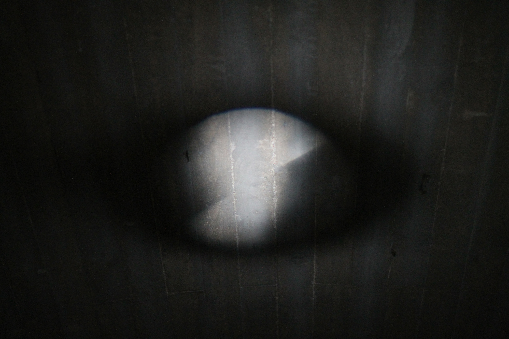
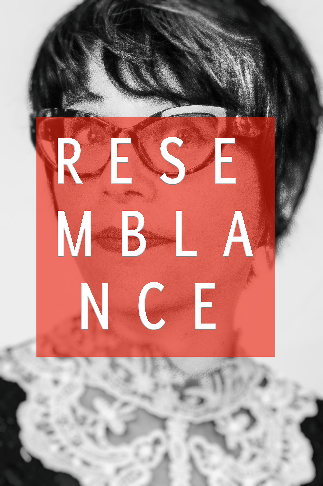
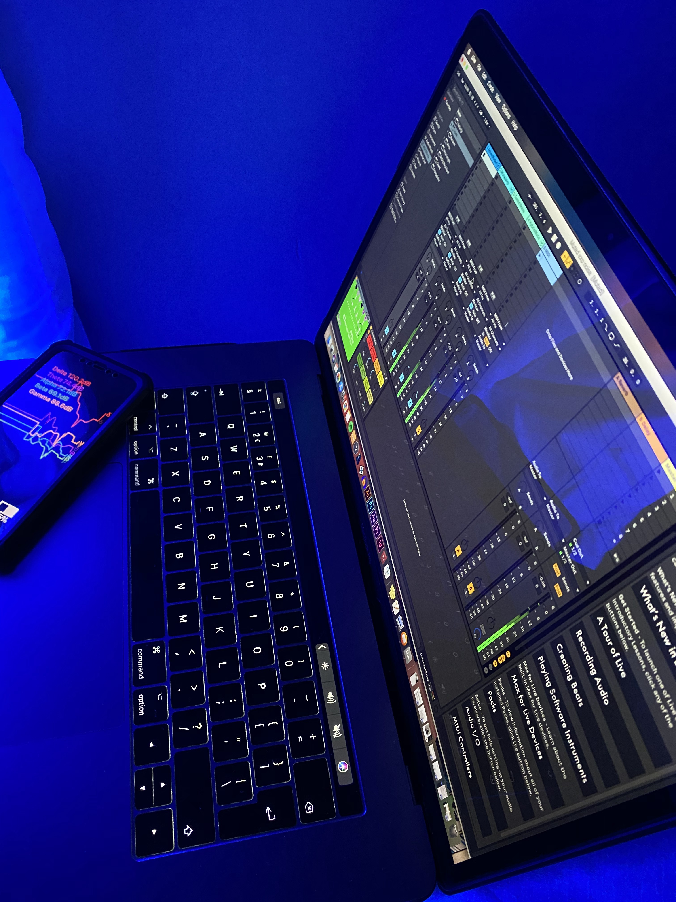
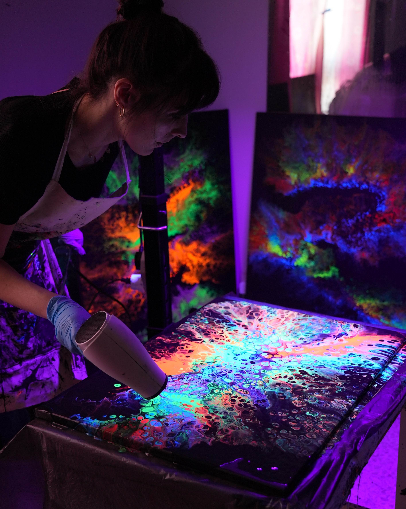

Verbal & Non-Verbals
Illustrations
Mickayla Bugeja

True Colours
Illustrations
Emma Cini

Ode to a Stone
Illustrated Animation
Peter Magro

C H A O S | Я Ǝ ꓷ Я O
Video Installation
Lara Manara

Not Always Everywhere but Always Somewhere
Light Installation
Nicole Pace

Confronting the Gaze
Photography
Bernard Polidano
Digitus
UX Design, illustrations
Clayton Saliba

Psyche Uninterrupted
Sound and Audio-Visual Synthesis
Daphne Sammut

The Meditating Mind
Painting, Videography, Audio
Nicole Zammit